Guías
Aprendelo paso a paso.
Guías cortas con capturas reales. En cada imagen, lo que tenés que tocar está iluminado. No hace falta saber de técnica.
1. Primeros pasos
En diez minutos tenés tu primera reunión lista. Mirá el video o seguí los pasos.
- 1
Creá una escena
Una escena es lo que se ve en pantalla: la cámara, un video, el púlpito. Tocá el + que está debajo de Escenas y ponele un nombre, por ejemplo Cámara.
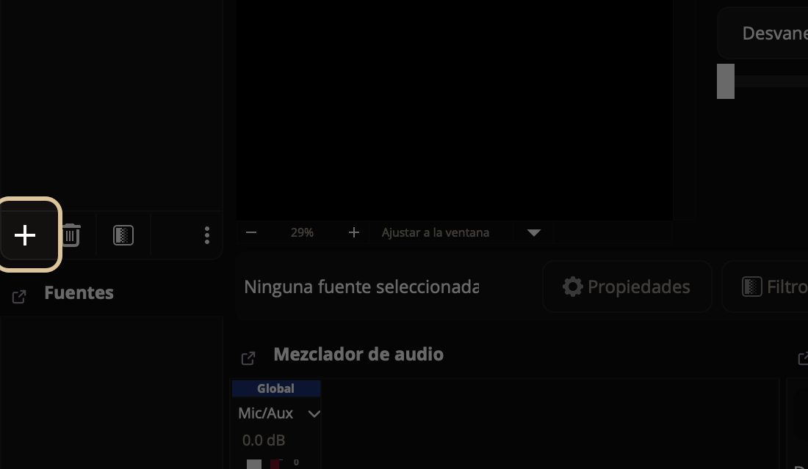
- 2
Agregale lo que se va a ver
Con la escena elegida, tocá el + de Fuentes. Elegí Cantos y coros, Biblia o Presentaciones, o Otra fuente para tu cámara, una imagen o un video.
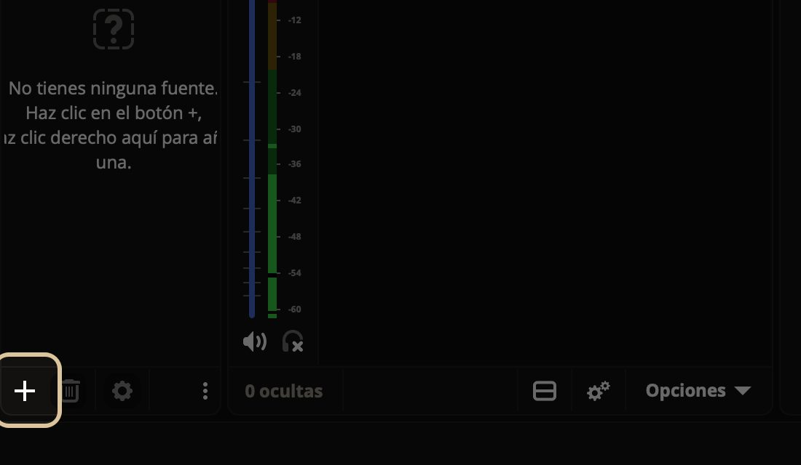
- 3
Cambiá de escena
Hacé clic en una escena de la lista. Primero queda EN ESPERA (a la izquierda) y nadie la ve. Con Pasar a pantalla la ve la congregación.
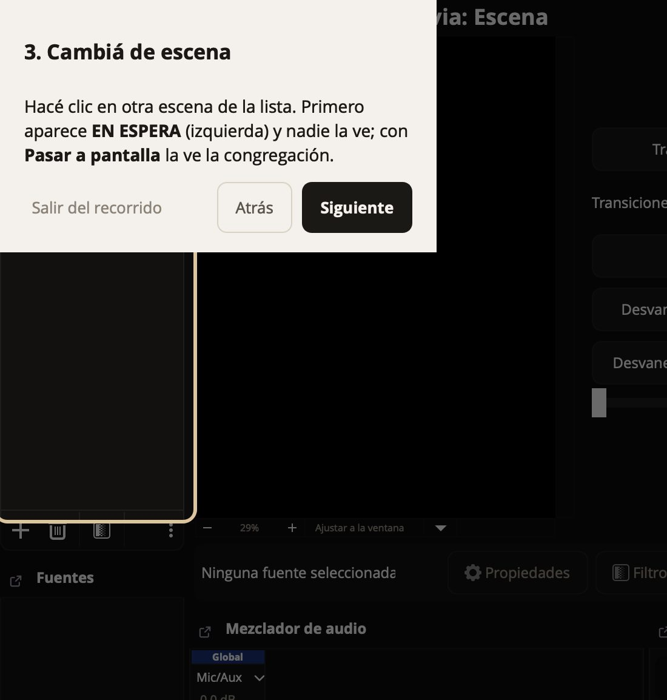
- 4
Escribí un canto
En la pestaña Cantos tocá Nuevo. Escribí el título y pegá la letra. Cada línea en blanco empieza una diapositiva nueva.
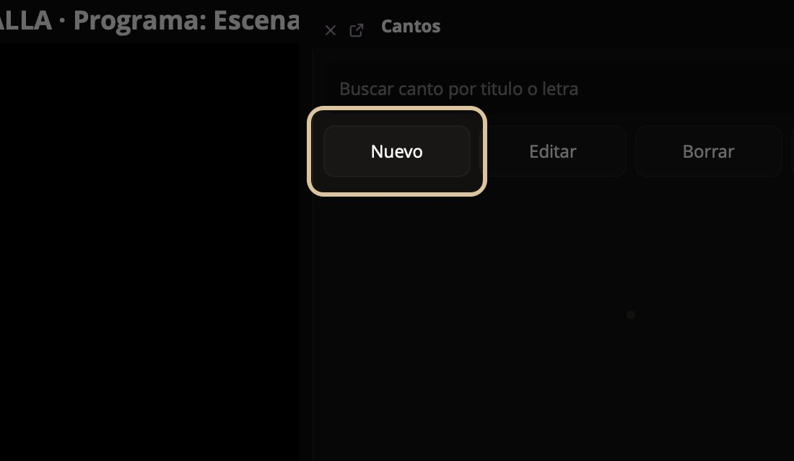
- 5
Preparalo en espera
Hacé doble clic en el canto. Aparece EN ESPERA: podés revisar que esté bien antes de mostrarlo.
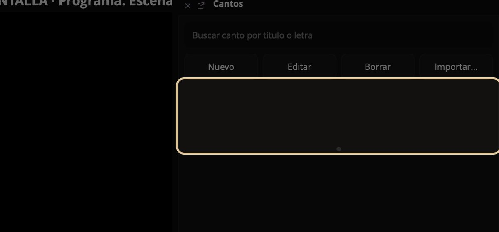
- 6
Pasalo a la pantalla
Tocá Pasar a pantalla. Después avanzá con Siguiente ▶, las flechas del teclado o el presentador inalámbrico.
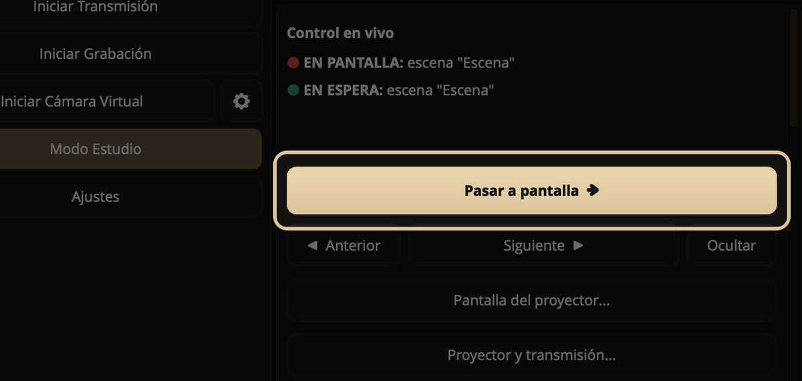
- 7
Conectá el proyector
Tocá Pantalla del proyector… y elegí el proyector o la TV. Ahí se ve a pantalla completa lo que está EN PANTALLA.
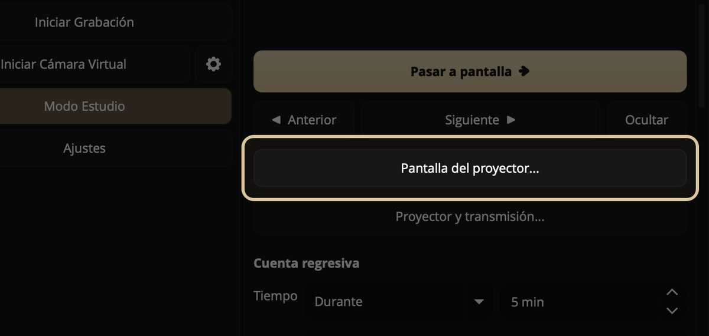
Consejo: la misma guía está dentro de la app, en Ayuda → Guía de inicio de WorshipStudio. Te ilumina cada botón y avanza sola cuando lo hacés.
2. Cantos y coros
Escribís la letra una vez y la usás siempre. Así se marcan los coros para que se repitan solos.
- 1
Escribí la letra con sus partes
En Cantos → Nuevo escribí [Estrofa 1], [Coro] o [Puente] arriba de cada parte. Cada párrafo es una diapositiva y a la derecha ves cómo queda.
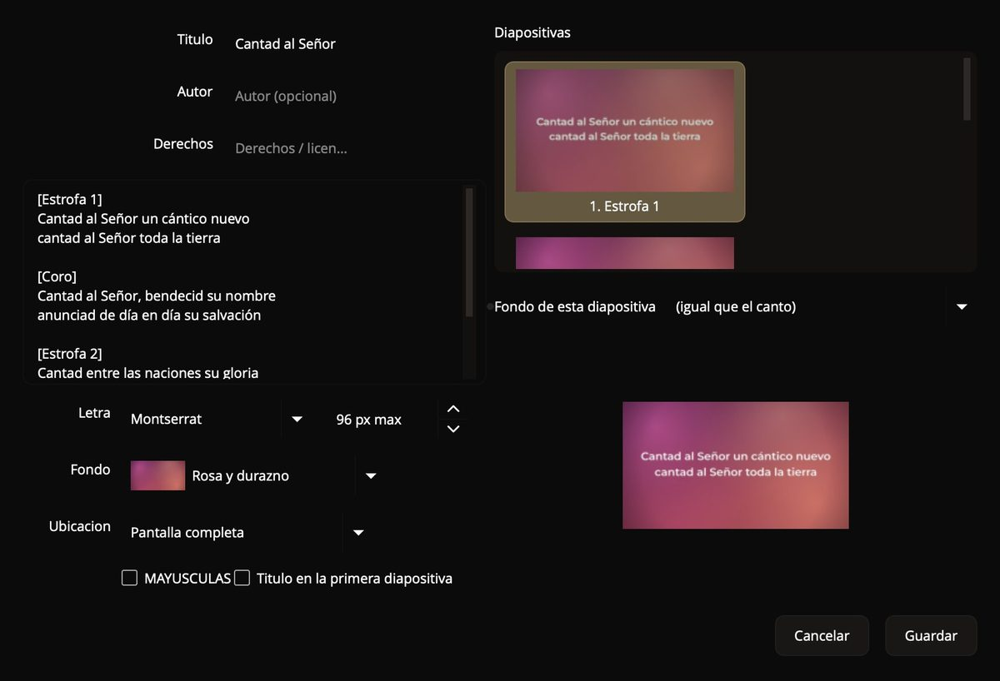
- 2
Repetí el coro sin copiarlo
Donde vuelve el coro, escribí [Coro] solo, sin la letra. WorshipStudio lo repite ahí, con la misma letra y el mismo fondo.
- 3
Elegí letra y fondo
Abajo elegís la Letra, el tamaño y el Fondo, que puede ser imagen o video. Con Fondo de esta diapositiva podés poner uno distinto solo en una.
- 4
Durante la reunión
Hacé doble clic en el canto. Tecla C salta al coro, P al puente y 1 a 9 a cada estrofa. Solo fondo deja la imagen sin letra.
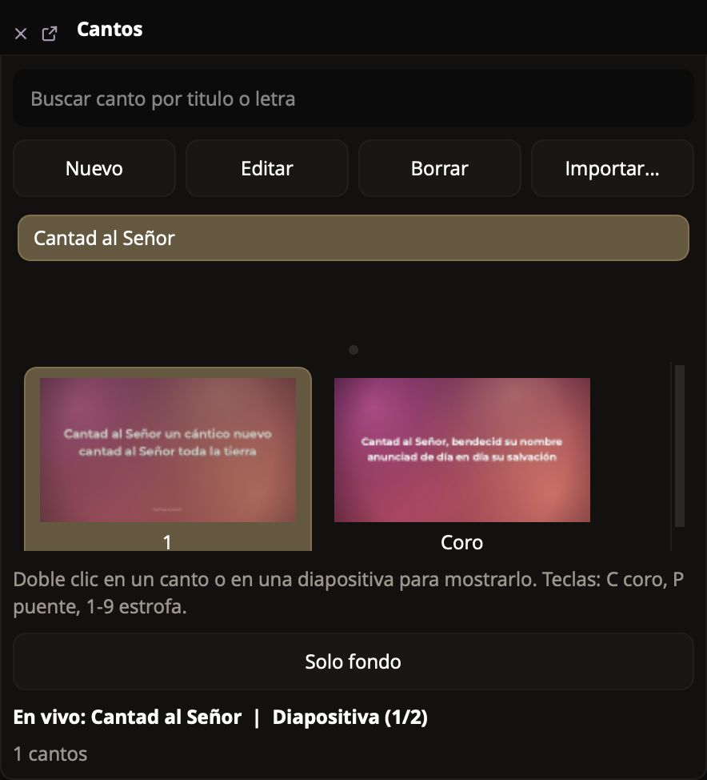
Consejo: para traer muchos cantos juntos, usá Importar… o Traer desde otro programa.
3. Biblia
Cualquier pasaje en segundos, en la versión que uses.
- 1
Buscá el pasaje
En la pestaña Biblia escribí la cita: Juan 3:16, Sal 23 o 1 Cor 13:4-7. También podés escribir una frase y busca dónde aparece.
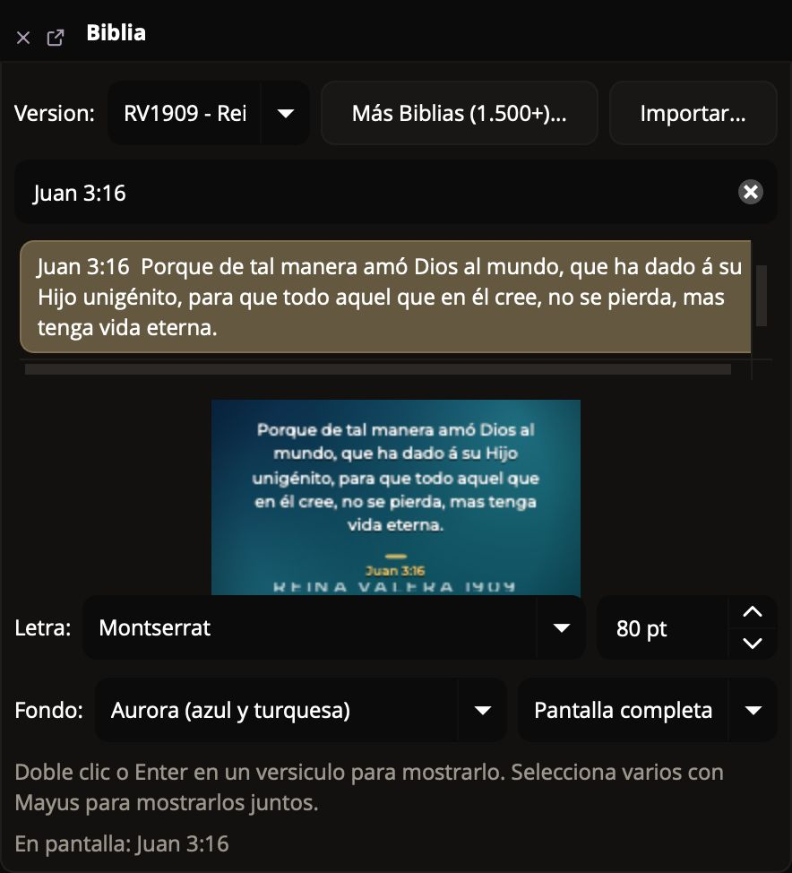
- 2
Mostralo
Hacé doble clic en el versículo o tocá Enter. Para mostrar varios juntos, seleccionalos con Mayúsculas.
- 3
Cambiá la versión
En Versión elegí otra Biblia. Con Más Biblias descargás gratis más de 1.500 traducciones. Las que dicen · en línea se leen por internet.
- 4
Pantalla completa o abajo
A la derecha de Fondo elegí Pantalla completa o Tercio inferior, que deja ver la cámara detrás del versículo.
4. PowerPoint y PDF
Tu presentación tal como la armaste, sin exportar nada y sin abrir otro programa.
- 1
Abrí el archivo
En la pestaña Presentaciones tocá Abrir… o arrastrá el archivo. El PowerPoint se abre al instante: un cancionero de 67 diapositivas tarda un segundo.
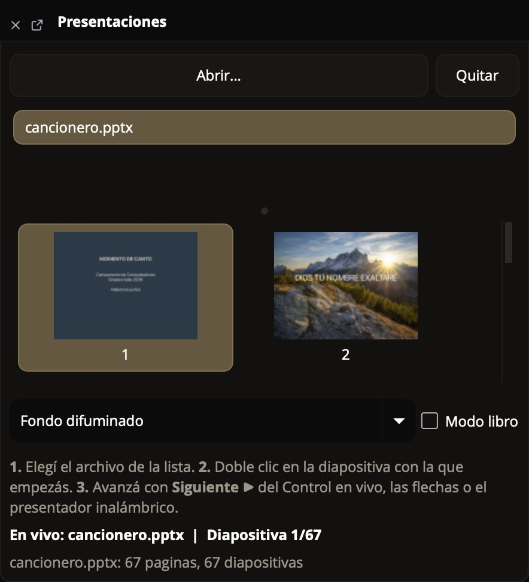
- 2
Empezá por la diapositiva que quieras
Hacé doble clic en la primera diapositiva que vas a mostrar.
- 3
Avanzá
Con Siguiente ▶, las flechas o el presentador inalámbrico del orador. La tecla B deja la pantalla en negro.
- 4
Presentaciones que no son 16:9
Si la diapositiva no llena la pantalla, elegí Fondo difuminado o negro para los costados. Para un libro en PDF activá Modo libro.
5. Proyector y transmisión por separado
Para las iglesias que transmiten: la congregación ve la letra a pantalla completa y por internet se ve la cámara con la letra.
- 1
Activalo
Abrí Herramientas → Proyector y transmisión y elegí por separado. Elegí la pantalla del proyector y el diseño de Cámara + proyector. Tocá Aplicar.
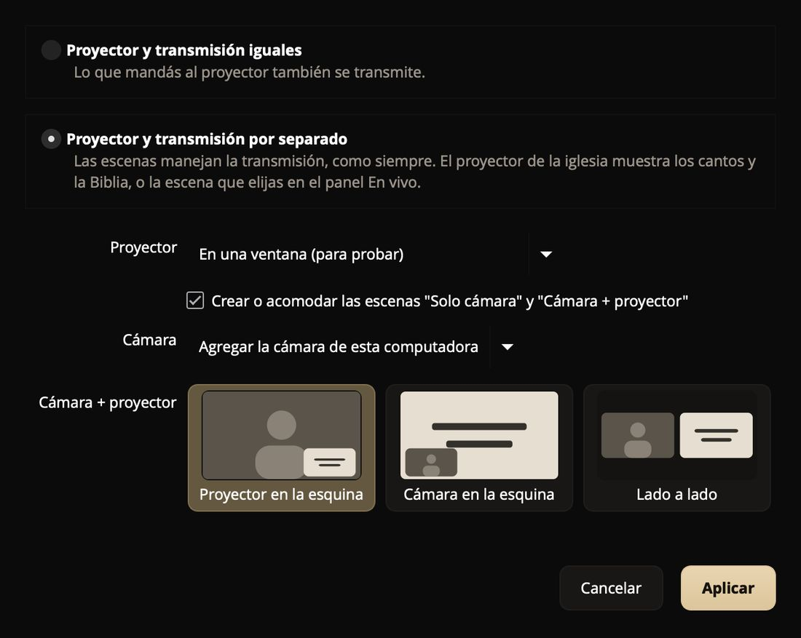
- 2
Lo que ve la iglesia
En el panel En vivo está el monitor del PROYECTOR y sus botones: los cantos y la Biblia, cualquier escena tuya o Negro.
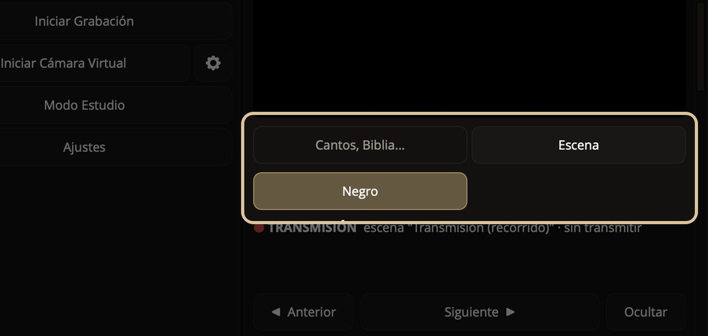
- 3
Lo que se transmite
La lista de Escenas maneja la TRANSMISIÓN, como siempre. Pasá de Solo cámara a Cámara + proyector con un clic.
- 4
Usá el proyector en tus escenas
En cualquier escena, agregá la fuente Proyector de la iglesia: por ejemplo la cámara con la letra en una esquina.
6. Desde el celular o la tablet
Cualquier celular de la red de la iglesia se vuelve el control. Sin instalar nada.
- 1
Activalo
En el panel En vivo, bajá hasta Control desde el celular y tocá Activar control desde el celular.
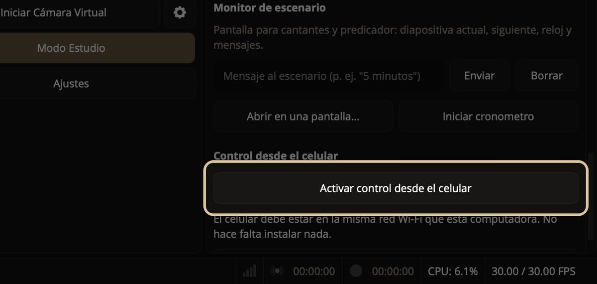
- 2
Escaneá el código
Con la cámara del celular escaneá el código que aparece. Tiene que estar conectado al mismo Wi-Fi que la computadora.
- 3
Manejá todo
Pestaña Proyector: lo que ve la iglesia, sus botones y Anterior / Siguiente (o deslizá el dedo). Pestaña Transmisión: lo que está en espera y al aire, y las escenas.
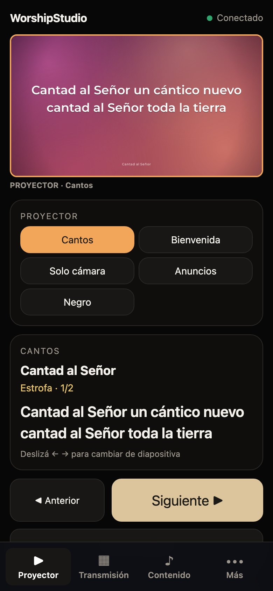
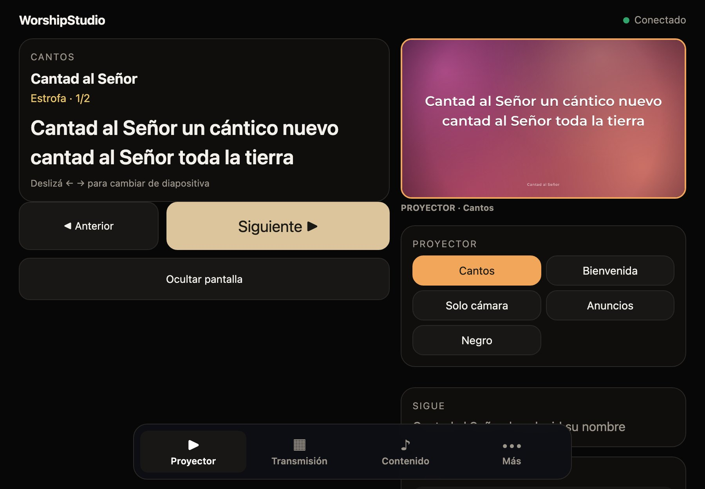
7. Traer lo que ya tenés
Si venís de otro programa, no empezás de cero. No se borra nada del otro programa.
- 1
Abrí Traer desde otro programa
En el menú Archivo → Traer desde otro programa…. Si WorshipStudio encuentra otro programa en tu computadora, te lo ofrece solo la primera vez.
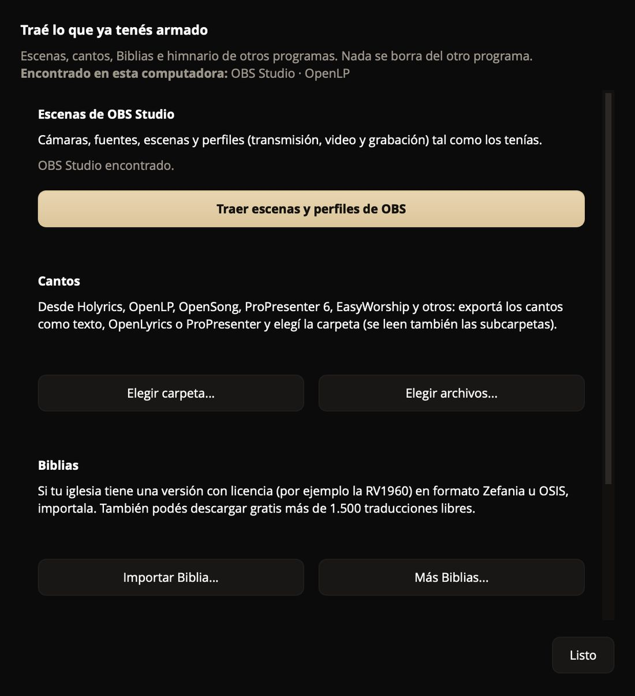
- 2
Escenas de OBS
Un clic en Traer escenas y perfiles de OBS: cámaras, fuentes, escenas y la configuración de transmisión.
- 3
Cantos
Desde Holyrics, OpenLP, OpenSong, ProPresenter 6 y otros: exportá los cantos y elegí la carpeta. Se pueden editar después.
- 4
Biblias e himnario
Biblias en OSIS o Zefania XML con Importar Biblia…. El himnario, con la carpeta de imágenes o PowerPoint por himno. En la Biblioteca te contamos dónde conseguir más.
¿Te trabaste?
Escribinos a contact.worshipstudio@gmail.com o desde la app en Ayuda → Enviar comentarios o reportar un error. Respondemos en español.